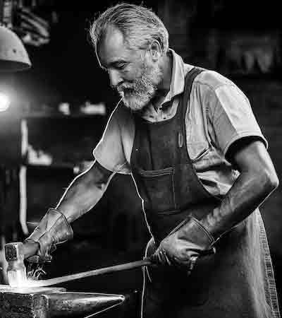

Interdisciplinary Collaborations
| Project | Description | Collaboration Opportunities | Funding Source/ Availability | Dates/ Contact | |
|---|---|---|---|---|---|
 |
Forest Reflections: A Story of Climate Sen-trees | Forest Reflections promotes awareness of the multifaceted impacts of climate change on trees globally, and the ways it affects wildlife and agriculture. Paintings, photographs, sculptures and digital media depict the effects of drought, fire, floods, insects and disease, as well as trees’ resilience and adaptability. | Partnership of YSoA and the Yale School of the Environment. Seeking art contributions, particularly sculpture and mixed media. Seeking one undergraduate intern to support exhibit development and cataloguing. | Funded by a grant from the National Conservation Association. Salary supplement funds available. |
January 6, 2025 to June 30, 2025. Harris Sutherton ClimateArt@Yale.edu |
 |
The Beauty and Symmetry of the Subatomic World of Physics | Scientists and artists collaborate to create visualizations of complex atomic and subatomic phenomena that are abstract and difficult to visualize. The artworks shall highlight symmetry and patterns, as well as the elegant simplicity that lie at the heart of these fields. | Partnership between YSoA and Brookhaven National Laboratories. Seeking faculty and student collaborators who would like to be part of a year-long conversation to take their art to new dimensions. | Funded by Brookhaven National Laboratory with funds from the National Science Foundation. Mini-grants available. |
February 1, 2025 to January 30, 2026. Bart Schroeder AtomicArt@Yale.edu |
|  | Tools of the Trade: A Photography Exhibit of Artisans at Work | This project will celebrate the history and present of artisanal work of all kinds, from blacksmithing to quilting to work not typically thought of as a trade or craft, such as laboratory science. Curriculum materials for high school students will also be developed. | This is a partnership between the YSoA and the Sociology Department at Yale. Seeking student and faculty photographs that depict diverse people working in trades of all kinds. | Funded by an anonymous philanthropic donor. Mini grants can defray materials costs and there will be an option to auction your images for charity at the end of the project if you choose. | February 14, 2025 to August 18, 2025 Jose Mansoni CraftsWork@Yale.edu |
 |
Secrets of the Deep: The Art and Magic of the Sea | This exhibit will celebrate maritime life and history, with a focus (not exclusively) on Connecticut and New England. It is devoted to inspiring an appreciation of human reliance on the sea and sea life and to promote an awareness of the impacts of ocean acidification and climate change. A range of art pieces will appeal to the very young as well as those who have weathered the tides of time. | Partners are the Mystic Connecticut Museum of Art and the Mystic Seaport Museum. Students and faculty are encouraged to propose art of any medium in any style that depicts any aspect of the sea and maritime life. | Funded by a grant from the Herman Melville Foundation. Stipends available for faculty and student collaborators and mini grants can defray materials costs. | March 15, 2025 to September 30, 2025 Octavia Brown ArtDelMar@Yale.edu |
 |
From Illuminated Manuscripts to Modern Printmaking | This project will celebrate the history of bookmaking from handmade illuminated manuscript through the development of the printing press to modern printmaking techniques. It will culminate in a public exhibit at the Beinecke Library. Curriculum materials for high school classes will also be developed. | This is a partnership between the YSoA, the Division of Humanities and the Beinecke Rare Book and Manuscript Library. YSoA printmaking students and faculty are encouraged to propose works for inclusion in the exhibit. Also needed are printmakers who can present talks and demos about modern printmaking methods. | Funded by a grant from the National Endowment for the Arts. Stipends available for faculty and student collaborators and mini grants can defray materials costs. | April 12, 2025 to January 31, 2026 Cathy Newlands Beinecke@Yale.edu |
 |
Art in the Age of Arthropods | A long-term exhibit will educate the public about insects and other arthropods from their emergence in the Cambrian Period to their futuristic role in science fiction. It will examine the effects of human activity on their evolution and distribution. | YSoA is collaborating with the Yale Peabody Museum of Natural History on this project, which will include a permanent exhibit as well as community outreach. Artworks of all media relevant to the topic may be proposed by faculty and students. | This educational project is funded by the National Science Foundation. Materials grants available. Seeking an undergraduate intern for help with exhibit curation, outreach and community art projects. | August 22 2025 to February 19, 2026 Samantha Firestone InsectArt@Yale.edu |